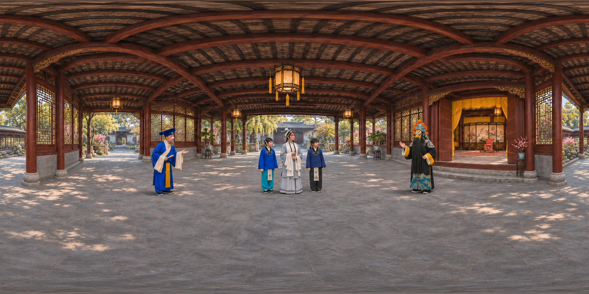

B1 · 5-second clips · 150 sound points
Drag to look around · Click a point to listen · Arrow keys to turn
READY TO EXPLORE
Every sound has a place. Find your own path.
Explore Qin Xianglian through sound.
Preparing the sound scene…
A performance recording is divided into short audio clips. Acoustic features and t-SNE are used to arrange clips into local sound neighborhoods, which are then mapped into the surrounding scene.
This desktop version uses 150 five-second clips from Qin Xianglian and the original B1 prototype's spatial coordinates.
Developed from research by Yuqi Wang and collaborators, through co-design, prototyping, and a 16-participant study of the original VR system. The design paper received a Best Paper Honorable Mention at DIS 2025. These findings concern the original VR system; the desktop experience has not been evaluated in that study.
White: unheard. Red: playing. Green: explored. Sound groups are listening cues; character positions do not label the sounds.
Enable JavaScript to open this sound scene.